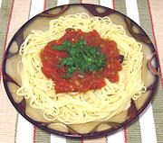

|
Harlot Sauce for PastaItaly - Sugo Alla Puttanesca | ||||
| For 1 # Effort: Sched: DoAhead: |
Pasta ** 30 min Yes |
The ladies are very busy, so this delicious sauce can be made quickly. It is traditionally used with spaghetti, but linguini (my favorite) and bucatini are also used. See also Stories. | |||
|
|
1-1/4 12 6 1/4 1-1/2 2 2 1/3 1/4 ---- |
# t T cl T t t --- |
Tomatoes (1) Olives (2) Anchovy filets (3) Chili Flakes (4) Capers Garlic Olive Oil ExtV Salt Pepper -- Garnish Parsley |
Prep - (20 min)
|